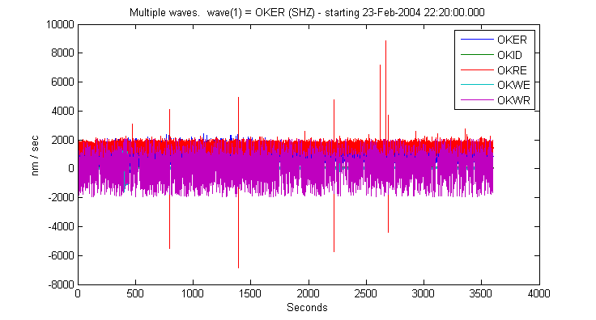
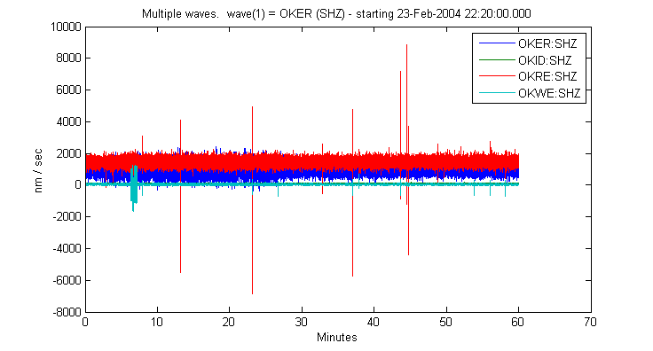
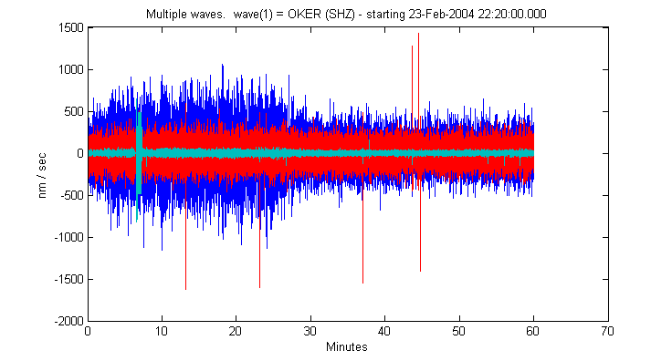
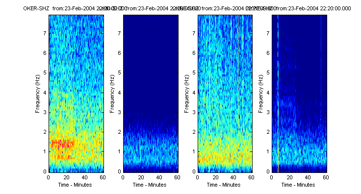
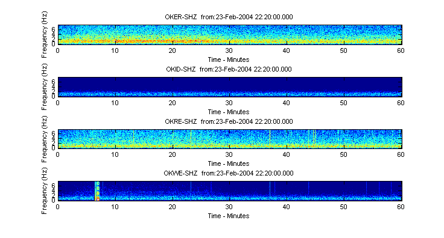
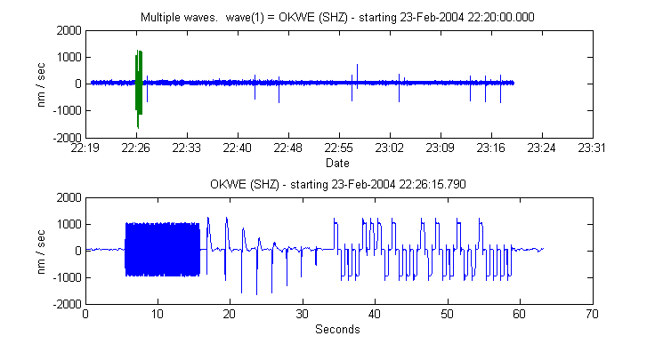
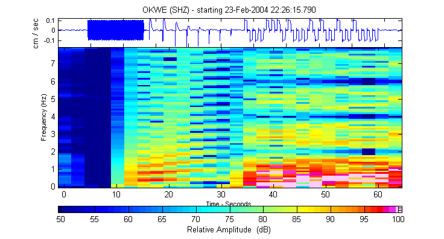
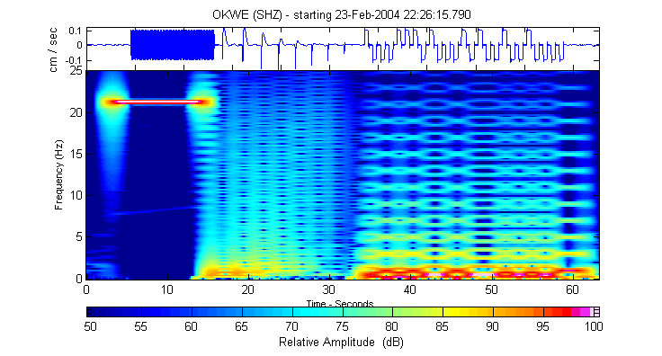
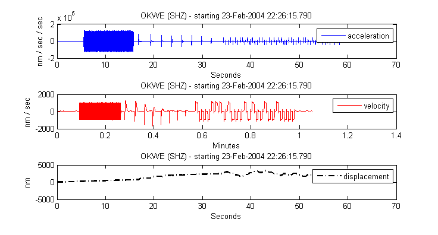
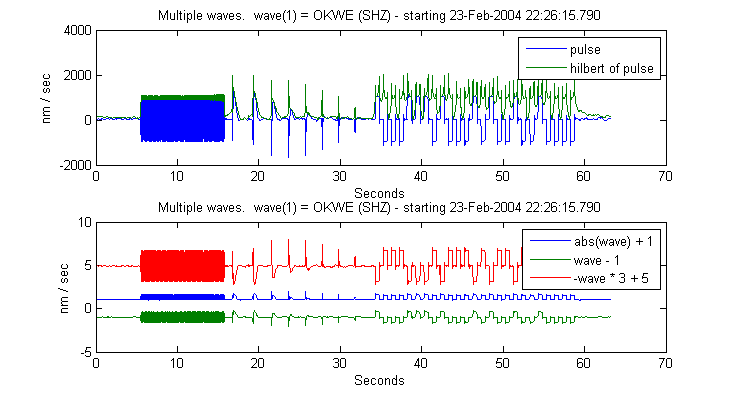

Waveform Suite Example: Plot examples
Here, we'll load some old data from Okmok Volcano and play around with a variety of ways to plot it.
Created by Celso Reyes for use with the Waveform Suite April, 2010
Contents
Describe the data to load
This doesn't have to be a step unto itself, but it helps keep things straight.
Define a datasource object that points to our data. This step is usually done in a separate file because it is often that the same datasources are reused. Instead of defining everywhere, just load or run the appropriate file.
ds = datasource('file',... I'm loading waveforms saved in .mat files 'J:/DATA/okmokraw/%04d/%02d/OkmokRaw_%04d_%02d_%02d_%s.mat',... file format string. 'year','month','year','month','day','station') % values referred to by the format string
ds =
type: FILE
location: J:/DATA/okmokraw/[YEAR]/[MONTH]/OkmokRaw_[YEAR]_[MONTH]_[DAY]_[STATION].mat
Now declare the stations of interest.
stations = {'OKID','OKRE','OKER','OKWR','OKWE'};
% the asterisk, below, is a wildcard because
% we're unconcerned with the network.
scnls = scnlobject(stations,'SHZ','*');
starttime = '2/23/2004 22:20';
endtime = '2/23/2004 23:20';
load the data, combining where appropriate
w = waveform(ds,scnls,starttime,endtime)
Upgrading waveform to new version... v1.10
Upgrading waveform to new version... v1.10
Upgrading waveform to new version... v1.10
Upgrading waveform to new version... v1.10
Upgrading waveform to new version... v1.10
w =
[1x5] waveform object with fields:
station
channel
start
freq
data
units
with common fields...
'CALIB'
'HISTORY'
The data we just loaded happend to be saved as an older version of waveform. The suite is smart enough to update each waveform as it is loaded into memory. The archive on disk remains untouched.
Plot the resulting data
Notice that
plot(w); legend(w);
Yuck! Notice that station OKWR looks ill. Let's loose that one. Also, lets change the x-axis to minutes because that may seem more meaningful than seconds.
w = w(~strcmpi(get(w,'station'),'OKWR'));
Plot with minutes on the x-axis instead...
plot(w,'xunit','minutes'); legend(w,'station', 'channel');
Filter it to look for more meaning
f = filterobject % default filterobject
f =
type: B (Bandpass)
cutoff: 0.8 5 Hz
poles: 2
clf wf = filtfilt(f,w); plot(wf,'xunit','minutes'); history(w(1))
ans =
'CREATED'
'Set START'
'Updated to version 1.1'
'Set START'
'Extracted, using time'
'SPLICEPOINT: 23-Feb-2004 23:00:00, removed 0 points (overlap)'
 Maybe there's something to be seen in the spectra...
s = spectralobject; specgram(s,w,'xunit','minutes');
Oops. since w was 1x4, so was the spectrogram. Instead, I'll use w', which is 4x1 and should therefore be much more legible.
specgram(s,w','xunit','minutes');
Ah. Now it's more obvious that there was some tremor occuring during the first 26 minutes. Also, it is seen strongest at OKER and OKWE, appears extremly difusely at OKRE, but doesn't appear at all at OKID
Extract a section of data, using the mouse
For grins, I'd like to get a closer look at the calibration pulse from station OKWE
clf %plot OKWE-SHZ, but with x-units of date plot(w(4),'xunit','date'); axis tight; % now with the mouse, pick the beginning & end point of the calib pulse [x, y] = ginput(2); pickedtimes = datestr(x) % and now, grab the section of waveform that contains the pulse mypulse = extract(w(4),'time',x(1),x(2)); subplot(2,1,1); plot([w(4), mypulse],'xunit','date'); subplot(2,1,2); plot(mypulse);
pickedtimes = 23-Feb-2004 22:26:15 23-Feb-2004 22:27:18
and tie it up in a nice bow-- plot spectrogram alongside the waveform
specgram2(s,mypulse)
Tweak the spectralobject
Make it prettier!
s = spectralobject(512,510,25,[50 100]); specgram2(s,mypulse);
Waveform handles unit changes
When Integrating and Differentiating, the waveform class takes care of units management.
subplot(3,1,1); plot(diff(mypulse)); legend('acceleration'); subplot(3,1,2); plot(mypulse,'r','xunit','minutes'); legend('velocity'); % also, all the standard plotting properties are still understood subplot(3,1,3); plot(integrate(mypulse),'k-.','linewidth',2); legend('displacement');
mathamatical operations on waveform objects
Notice that, in this case the units are unchanged...
subplot(2,1,1); plot([mypulse,hilbert(mypulse)]); legend('pulse','hilbert of pulse') subplot(2,1,2); scaled = mypulse ./ max(abs(mypulse)); plot([abs(scaled) + 1, scaled - 1, ((-scaled) * 3 + 5)]); legend('abs(wave) + 1','wave - 1','-wave * 3 + 5');
note: typing scaled -1 instead of scaled - 1 will cause MATLAB to error with : ??? Error using ==> horzcat because it will try to concatenate a double (-1) to a waveform, which makes no sense.
history(scaled)
ans =
'CREATED'
'Set START'
'Updated to version 1.1'
'Set START'
'Extracted, using time'
'SPLICEPOINT: 23-Feb-2004 23:00:00, removed 0 points (overlap)'
'Set START'
'Extracted, using time'
'Divided by 1665'
Please send feedback to: celso <at> gi <dot> alaska <dot> edu
| Was this useful? | YES | NO |